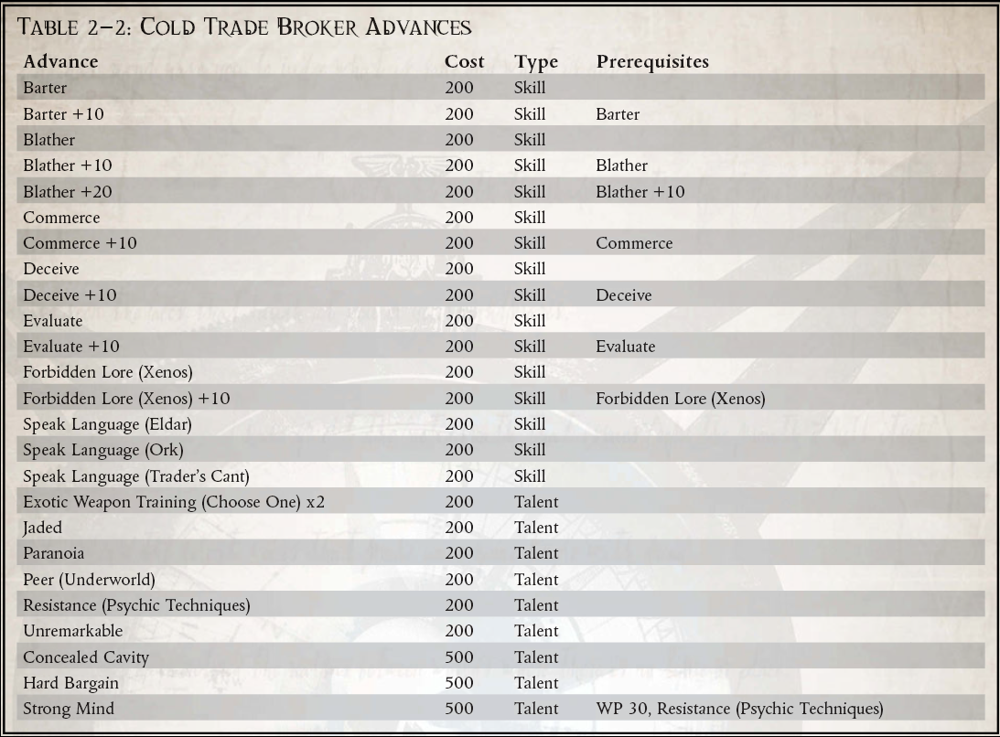

你问这是什么？一个人怎么可能使用这样的工具？什么样的外星智能可以设计出这样的设备？一旦我们处理了我的赔偿，我将回答这些问题以及更多问题……”
——Rayner Hackert，冷交易走私者
在帝国空间的边界上有许多财富。远古时代的考古遗迹，人类扩张十字军东征的圣物，以及那些在星际中生活的时间比人类更久的生物的遗物。所有这些以及更多的东西都处于休眠状态，等待着那些愿意寻找它们的人。虽然通过交易所有这些商品可以获得利润，但正是这些异形人工制品让整个科罗努斯广域内的数千人着迷。冷贸易，作为被禁外星文物的黑市贸易，在广域中广为人知，是大口外边境前哨中的一个蓬勃发展的行业。
促成这项交易的男人和女人是一个邪恶的犯罪集团，他们非常清楚他们的行为使他们与可怕的审判庭的异形审判庭分支和他们从中获取商品的异形文明产生了冲突。为了避免一种或另一种威胁的全部力量，大多数经纪人都喜欢一种特定的方法。有些人收集在岁月的重压下早已崩溃的异形文明的遗迹，掠夺一个消失的人的废墟，而没有得到他们死去已久的守护者的报复。其他人，甚至比大多数同类更炫耀帝国制裁，直接与异形互动并交易他们的货物，与他们结盟，并且在极少数情况下被他们接受，就像任何人类成员一样.正是这种对他们的异端有着敏锐洞察力的冷贸特工，才引起了异形审判庭的最大关注。还有一些人在采购他们的商品时扮演了更暴力的角色，积极寻找外星受害者，他们可能会剥夺他们尸体上所有有价值的物品。
Cold Trade 经纪人绝不是简单的海盗，他们在星空中寻找异种科技。他们是老练的罪犯，极端无情，并因多年与危险的外来物种的互动而变得更加顽固。考虑到他们选择的事业要求他们穿越星辰，在浩瀚的不同世界建立联系，同时逃避帝国权威，经纪人往往是狡猾的骗子，愿意使用诡计和直接的暴力。再加上冷交易的经纪人从不真正单独工作，辛迪加的每个代理人都有庞大的走私者、围栏、暴徒和杀手网络的非法支持，冷交易的力量不容小觑。
Xenos 的手工艺品绝不是在整个 Expanse 走私的唯一商品。考虑到边境的规模和人口，以及各个系统的法律差异很大，更不用说个别行星了，在整个广域网中被取缔的商品清单是无限的。数以百万计的普通走私者在广域网和邻近的卡利西斯星区工作，他们以向行星人口提供世俗的奢侈品为生，因为帝国信条的深奥变化而被禁止。尽管这些黑市经营者违反了他们所服务的任何系统、星球或站点的法律，但他们的行为并没有导致他们与帝国更可怕的力量发生冲突，他们也没有发现自己站在外星文明的错误一边.因此，这些走私者虽然本身就是一个危险的群体，但绝不是冷交易中冷酷无情的罪犯。
卷入冷交易并不需要太多。那些愿意冒着激怒外星人或审判官，或两者兼而有之的人，可以获得大量利润。成为成千上万偏离与邪恶外星人打交道的禁令的灵魂中的一员很少是有意识的选择，至少一开始是这样。许多冷交易者以探险家或雇佣兵的身份开始他们的生活，并发现自己拥有异形人工制品。有些人对这种物品没有任何个人用途，只会寻求尽快处理它。正是这种傻瓜最常被帝国权威或宗教裁判所的代理人压垮。那些更狡猾、更狡猾的人，也许与黑市交易有过联系，最终会接触到那些知道这些物品真正价值的人。这些更有经验的经纪人也知道有能力的经纪人的价值，并且会通过任何必要的手段来争取他们的永久服务。那些积极寻求冷交易经纪人生活的少数人是一群冷酷无情的人，他们更适合罪犯和外星人的生活，而不是帝国正直公民的生活。
所需职业：任何
替代等级：2 或更高 (7,000xp)
要求：以下技能之一：（以物易物、商业或禁忌传说（Xenos））。
其他要求：探索者在从事此职业之前必须积极参与被禁止的外星文物交易。
好处：探索者获得冷交易者特质。
特殊：冷交易经纪人自动获得天赋：敌人（宗教裁判所）

冷交易者（特质）
冷交易有很多路径，每个经纪人必须在交易中选择自己的方式。一些经纪人选择处理填充在 Expanse 中的异形。这些经纪人经常被他们的异形同行接受为受欢迎的局外人，甚至是保税兄弟。当然，这通常会导致宗教裁判所的坚定成员正确地怀疑，经纪人已经与反对帝国的无数势力之一结盟。其他经纪人实际上与他们兜售文物的外星人作斗争。这些男人和女人要么突袭现存的文明，要么深入他们特别感兴趣的异形的废弃废墟。冷交易的这些成员避免了直接应对异形威胁所产生的大部分怀疑，但却赢得了与宗教裁判所同等的敌人。
当探险家获得此特质时，他必须选择两条路径之一，要么直接与异形打交道，要么掠夺他们的文化。如果他选择与他交易的异形打交道，他将获得适用于他所处理的异形物种的 Peer (Xenos) 天赋。不幸的是，探索者如果选择这条道路，他的行为会吸引异形审判庭的目光，并获得敌人（宗教裁判所）天赋。
如果探险者选择了掠夺者的路径，他们将获得与他们选择的外星猎物相关的敌人（异形）天赋。这类经纪人经常发现自己卷入了对猎物的暴力行为，因此往往过着更多的军事生活。如果探险者选择了这条路，他会获得适用于他的特定异形的仇恨天赋。